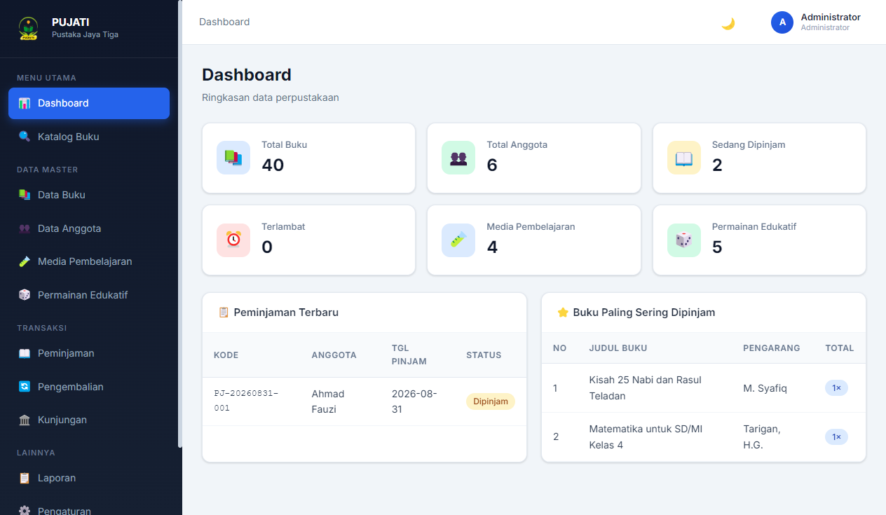

Sistem Informasi Perpustakaan Sekolah Modern & Siap Kustomisasi
Aplikasi desktop native (Windows) yang dirancang untuk mempermudah digitalisasi dan administrasi perpustakaan sekolah. Sistem bekerja 100% Offline-First tanpa memerlukan jaringan internet, berstandar klasifikasi DDC nasional, dan dapat dikustomisasi penuh dengan nama serta logo sekolah yang diinginkan.
12+
Modul Terintegrasi
100%
Offline (SQLite Lokal)
DDC
Standar Nasional 000-900
Windows
Native App (10 & 11)

Solusi Praktis & Efisien untuk Perpustakaan Sekolah
Dibuat untuk mengatasi kendala perpustakaan konvensional, mulai dari pencatatan manual, kesulitan pencarian buku, hingga keterbatasan jaringan internet di sekolah.
Fleksibilitas Nama & Identitas Instansi
Sistem bersifat netral dan dapat dipersonalisasi dengan nama sekolah, logo resmi, kop dinas, dan alamat instansi manapun yang membutuhkan.
Kemandirian Data & Bebas Internet
Seluruh basis data tersimpan di penyimpanan lokal komputer perpustakaan (SQLite). Sistem tetap bekerja dengan kecepatan maksimal walau internet sedang terputus.
Klasifikasi DDC & Standar Perpustakaan
Mendukung struktur klasifikasi Dewey Decimal (000-900), pembuatan nomor panggil (call number), cetak label punggung buku, dan barcode buku.
Otomasi Sirkulasi & Perhitungan Denda
Mempercepat alur peminjaman dan pengembalian buku dengan scanner barcode serta kalkulasi denda keterlambatan yang akurat.
Impor & Ekspor Massal Microsoft Excel
Memudahkan migrasi data buku dan siswa dalam jumlah ribuan secara instan melalui file Excel (.xlsx) tanpa perlu input berulang-ulang.
Pencadangan Database 1-Klik
Fitur backup dan restore mandiri yang memudahkan staf memindahkan atau mengamankan data ke flashdisk / media penyimpanan eksternal.
Daftar Modul Terintegrasi dalam Aplikasi
Mencakup seluruh alur kerja perpustakaan mulai dari data master, pengorganisasian koleksi, presensi pengunjung, hingga pelaporan resmi.
Dapat Disesuaikan untuk Berbagai Instansi Pendidikan
Aplikasi ini telah dirancang secara modular sehingga seluruh identitas sekolah dapat diatur sesuai kebutuhan instansi terkait:
1. Judul & Nama Aplikasi
Nama aplikasi disesuaikan dengan permintaan instansi (misal: Pustaka SMAN 1, SIPERPUS SMP 2, atau E-Library SMK).
2. Logo & Kop Laporan Dinas
Kop surat resmi, logo sekolah, nomor NPSN, alamat instansi, dan penandatangan laporan (Kepala Sekolah & Kepala Perpustakaan) pada dokumen cetak PDF.
3. Kartu Anggota Ber-Barcode
Desain kartu anggota perpustakaan resmi yang mencantumkan nama sekolah, identitas siswa/guru, foto, dan barcode ID yang dapat discan saat presensi dan peminjaman.
4. Parameter Aturan Sirkulasi
Pengaturan masa lama pinjam (hari), batas kuota peminjaman buku per orang, dan nominal denda keterlambatan per hari yang dapat disesuaikan dengan aturan perpustakaan.
Dokumentasi Visual Antarmuka Aplikasi
Berikut 12 tangkapan layar asli dari aplikasi yang telah selesai dikembangkan. Klik gambar untuk melihat resolusi penuh dan keterangan fiturnya.
Spesifikasi Teknis & Arsitektur Perangkat Lunak
Dibangun dengan standar teknologi modern yang mengutamakan performa responsif, kestabilan sistem operasi desktop, dan keamanan data lokal.
🖥️ Kebutuhan Minimum Komputer:
- ✔ Sistem Operasi: Windows 10 atau Windows 11 (64-bit)
- ✔ Prosesor: Intel Core i3 / AMD setara (atau lebih baru)
- ✔ Memori (RAM): Minimal 2 GB (Disarankan 4 GB)
- ✔ Penyimpanan: Sisa ruang 200 MB pada harddisk/SSD
- ✔ Perangkat Pendukung: Barcode Scanner USB (opsional/plug-and-play) & Printer Standar